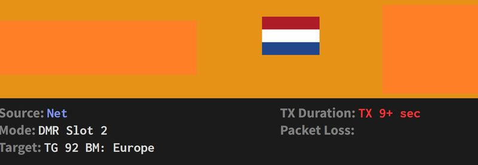
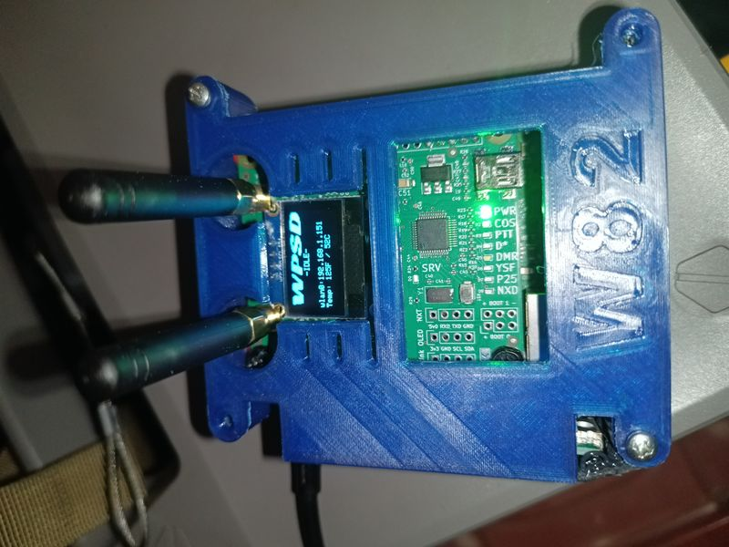
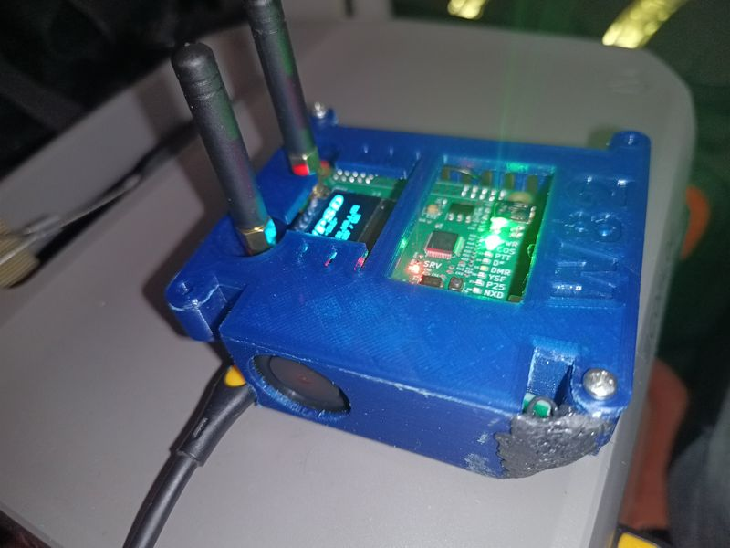
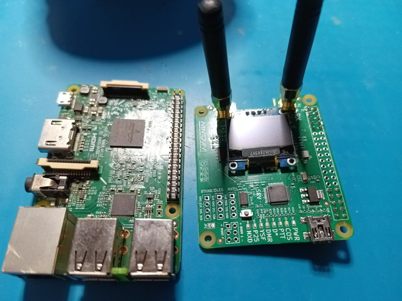
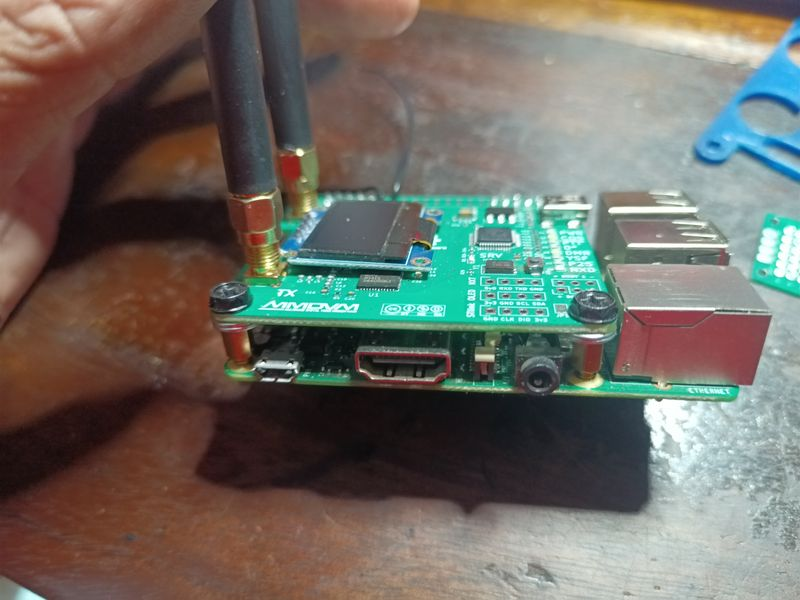
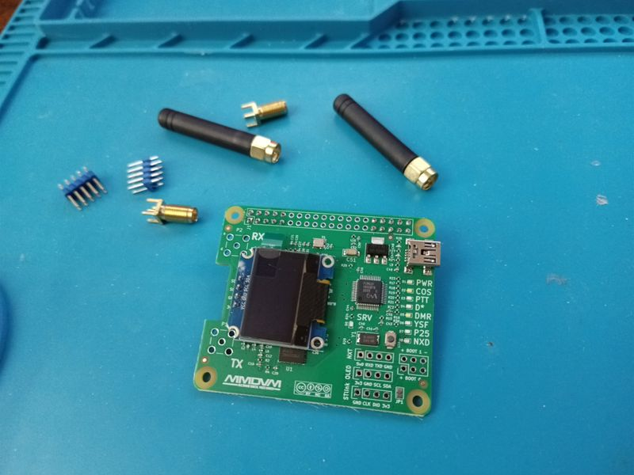
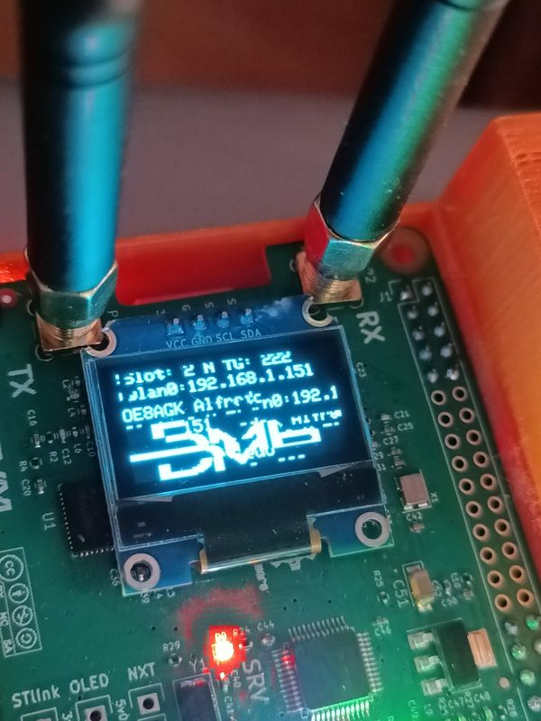
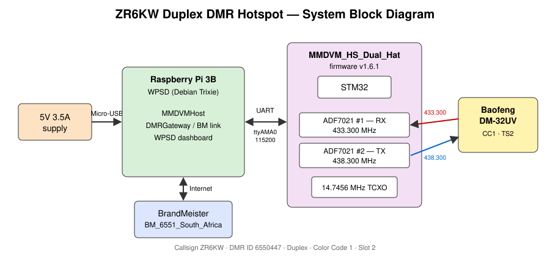
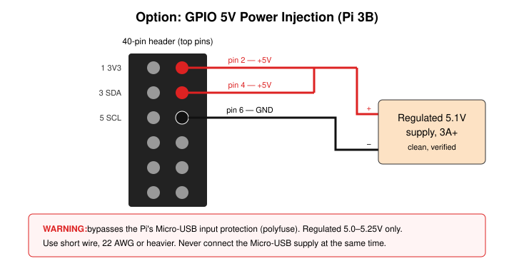

Digital Radio Hotspot
A small home-built box that lets my handheld digital radio talk to radio amateurs around the world, using the internet to cover the distance.
On its own, a handheld radio reaches a few kilometres at best. A hotspot is a tiny personal gateway: the handheld talks to it over a short radio link, and the hotspot carries the conversation over the internet to BrandMeister, a network that links thousands of digital radios worldwide. Mine is built from a Raspberry Pi (a credit-card-sized computer) with a radio board on top, in a 3D-printed case with a cooling fan. It runs under my amateur radio callsign, ZR6KW.
Where it's at
- Working day to day: it links my radio to the network and passes calls both ways.
- Power problem fixed (it seems): the Pi was running short of power, which caused glitches. A proper 3 A-rated cable appears to have solved it.
- Still an occasional freeze: now and then the radio board locks up until its software is restarted. The automatic watchdog that should do this by itself still needs fixing.
- Fine-tuning left: the receive side is calibrated; checking the transmit side properly needs a cheap software-defined radio (SDR) to measure it.


Photos












Build your own: step by step
A rough outline of how I set mine up. Use frequencies allowed by your own licence and local band plan; the ones below are mine.
- Get licensed and registered. You need an amateur radio licence and callsign (ICASA in South Africa), a DMR ID from radioid.net, and a BrandMeister SelfCare account, where you set a hotspot password.
- Gather the parts. A Raspberry Pi 3B, an MMDVM_HS_Dual_Hat (the dual version allows full duplex), a microSD card, a 5 V / 3 A power supply with a 3 A-rated Micro-USB cable, and a DMR handheld (mine is a Baofeng DM-32UV). A case with a fan is optional.
- Assemble. Fit the hat onto the Pi's GPIO header and screw on both antennas. Always have antennas attached before the board can transmit.
- Install WPSD. Download the WPSD image from wpsd.radio and write it to the microSD card with Raspberry Pi Imager or balenaEtcher. Set up Wi-Fi (or plug in a network cable) as WPSD's instructions describe, then boot the Pi.
- Open the dashboard. From a browser on the same network, open the hotspot's address (WPSD's instructions give it) and go to the configuration page.
- Configure the hotspot.
- Callsign and DMR ID, and your timezone
- Modem: MMDVM_HS_Dual_Hat on the Pi's GPIO, in duplex mode
- Frequencies: RX 433.300 MHz, TX 438.300 MHz
- DMR mode on, Color Code 1
- Network: BrandMeister, the master for your country, and your hotspot password
- Secure it. Change the default passwords, turn on WPSD's firewall option, and keep the system updated.
- Program the radio. Add a digital channel that mirrors the hotspot: receive 438.300 MHz, transmit 433.300 MHz, Color Code 1, Timeslot 2, TX Admit Always. Then add the talkgroups you want to use.
- Calibrate receive. Use WPSD's calibration tool to find the RX offset with the lowest error rate (details under Technical details).
- Test. Make a call to BrandMeister's echo ("Parrot") service and check you hear yourself back, then watch calls come in on the dashboard.
- Make it reliable. Check the Pi isn't short of power (
vcgencmd get_throttledshould show0x0) and turn on the WPSD Services Watchdog so a stuck modem restarts itself.
Technical details
Hardware
| Component | Detail |
|---|---|
| Single-board computer | Raspberry Pi 3B |
| Modem | MMDVM_HS_Dual_Hat: dual ADF7021 (one RX, one TX) for true duplex |
| Modem firmware | v1.6.1 |
| Reference oscillator | 14.7456 MHz TCXO |
| Pi to modem link | GPIO UART, /dev/ttyAMA0 at 115200 baud |
| Handheld radio | Baofeng DM-32UV |
| Power | 5 V / 3.5 A wall supply with a 3 A-rated Micro-USB cable |
| Network | BrandMeister, master BM_6551_South_Africa |


Software
- WPSD, current Debian Trixie-based image (fresh reinstall)
- Set up during the reinstall: modem type, timezone
Africa/Johannesburg, BrandMeister network, firewall and password hardening, persistent journald logging - Pi 3B UART: Bluetooth must not hold the hardware UART. Check
dtoverlay=disable-bt(orpi3-disable-bt) in/boot/firmware/config.txtand thathciuartis disabled. WPSD sets this by default, but it's worth confirming after updates.
RF configuration
| Parameter | Hotspot | Handheld (mirror image) |
|---|---|---|
| RX frequency | 433.300 MHz | 438.300 MHz |
| TX frequency | 438.300 MHz | 433.300 MHz |
| Color Code | 1 | 1 |
| Timeslot | 2 | 2 |
| RXOffset | −75 Hz (calibrated) | |
| TXOffset | −75 Hz (estimated, not measured) | |
| DMRTXLevel | 45 (trial value) | |
| TX Admit | Always (Color Code Idle can cause "Channel Busy" while network traffic is passing) |
Relevant MMDVMHost settings (credentials omitted):
[General]
Callsign=ZR6KW
Id=6550447
Duplex=1
[Info]
RXFrequency=433300000
TXFrequency=438300000
[Modem]
Port=/dev/ttyAMA0
UARTSpeed=115200
RXOffset=-75 ; calibrated, BER 0.09%
TXOffset=-75 ; estimated from RXOffset - needs SDR verification
DMRTXLevel=45 ; trial value - needs SDR verification
[DMR]
Enable=1
ColorCode=1Calibration
RX offset (done), with the WPSD calibration tool:
- Select DMR mode, click Start and wait for the status indicator to go green.
- On the radio, set TX Admit to Always temporarily and hold PTT on the normal hotspot channel (not VFO).
- Step the offset in 100 Hz, then 50 Hz, then 25 Hz steps, chasing the lowest BER.
- Run long enough to check the best offset doesn't drift as the board warms up.
- Save Offset, Stop, then set TX Admit back.
Result: BER 0.09% at RXOffset −75 Hz. DMR is comfortable up to about 1%.
TX offset and deviation (open): the calibration tool uses the radio as the signal source, so it only measures RX. TXOffset was set to −75 on the assumption that both ADF7021s share the same TCXO and the two frequencies are close, and DMRTXLevel was trialled at 45. Neither is a measurement. Proper TX calibration needs an RTL-SDR (or a spectrum analyser) to check the actual transmitted frequency and deviation.
Troubleshooting log
Issue A: modem lock-up (intermittent, still open)
- Symptom: the dashboard freezes on
TX: DMR, the radio shows "link timeout" on PTT, and network traffic on the dashboard doesn't reach the radio. It tends to happen around transmitting. - Diagnosis: the modem reports it is transmitting and never reports completion, so it is stuck at the STM32/firmware level.
- Workaround:
sudo systemctl restart mmdvmhostrestores it every time. - Power: fixing the under-voltage (below) looks to have cut the problem down, but lock-ups still happen now and then.
- To do: fix the WPSD Services Watchdog so it restarts the modem automatically. A systemd timer that checks the modem and restarts it is a fallback.
Issue B: carrier but no DMR decode on the handheld (open)
- Symptom: the radio's RX LED and signal meter respond to the hotspot's 438.300 MHz transmission, but no audio or callsign is decoded, sometimes as intermittent drop-outs.
- Key point: carrier detect and the S-meter only prove RF is present, not that the modulation can be decoded.
- Tried: TXOffset −75 and DMRTXLevel 45, with no fix.
- Next: measure TX frequency and deviation with an RTL-SDR, and correlate drop-outs with BER on the dashboard.
Resolved: the SVC LED flashing red is the normal firmware heartbeat, not a fault. An earlier forum-based diagnosis was wrong.
Power investigation
| Check | Result |
|---|---|
vcgencmd get_throttled | 0x50000: under-voltage and throttling had occurred since boot |
| After swapping to another cable | Still 0x50000 |
| Live check | 0x50005: under-voltage and throttling active at that moment |
| GPIO power injection | Tried, then removed (see below) |
| 3 A-rated Micro-USB cable | Appears to have solved the under-voltage |
Why it mattered: load spikes (at boot, and from the dual hat while transmitting) caused brief voltage sags at the Pi. These can glitch the UART to the STM32 and leave the modem wedged, which fits Issue A. Cheap USB cables typically have thin 28–30 AWG power wires that drop too much voltage.
Reading get_throttled: bits 0–3 mean "happening now" (0x1 under-voltage, 0x2 frequency capped, 0x4 throttled, 0x8 soft temperature limit); bits 16–19 mean "has happened since boot". The flags only clear on reboot. Watch them live with watch -n 1 vcgencmd get_throttled.
GPIO power injection (tried, not kept): feeding regulated 5 V straight into header pins 2/4 (5 V) and 6 (GND) avoids the Micro-USB connector and cable losses, but it also bypasses the Raspberry Pi's built-in input protection (its polyfuse). That risk wasn't worth keeping once a proper cable did the job, so the Pi is back on Micro-USB power.


Mobile version (12 V vehicle power)
A mobile version of the Pi 3B and hat, powered from a vehicle's 12 V system, has also been explored.
- Didn't work: LM2596 and XL4015 buck modules, and a homebrew LM317 regulator. They caused RF interference in the receiver or board resets.
- Planned: vehicle 12 V → fuse → LC/ferrite input filter → Pololu D24V50F5 (or equivalent) synchronous 5 V buck → LC/ferrite output filter → Pi 3B and hat.
- No-solder alternative: a quality USB car charger with clip-on ferrites on the cable.
Useful commands
sudo systemctl restart mmdvmhost # clear a stuck modem
sudo systemctl status mmdvmhost # PID / uptime - is it the same process?
journalctl -u mmdvmhost -f # live MMDVMHost journal only
ls /var/log/pi-star/MMDVM-*.log # MMDVMHost's own detailed log
vcgencmd get_throttled # power / throttling flags
watch -n 1 vcgencmd get_throttled # catch under-voltage live
systemctl status hciuart # should be disabled (UART free for modem)Lessons learned
- Carrier and S-meter response are not the same as a successful DMR decode. Verify the modulation.
- Guessing DMRTXLevel and TXOffset isn't calibration. Measure with an SDR.
- A clean
get_throttledat one moment doesn't rule out power; the "since boot" bits and a live watch tell the real story. - The cable matters as much as the power supply. A proper 3 A-rated cable fixed what a 3.5 A supply couldn't.
- Don't bypass the Pi's power protection when a better cable will do.
- Don't trust forum diagnoses of LED patterns without checking the firmware's actual behaviour.
Next steps
- Fix the WPSD Services Watchdog so a stuck modem restarts itself
- Track down the cause of the remaining intermittent lock-ups
- Get an RTL-SDR and calibrate TX frequency and deviation
- Keep watching
get_throttledto confirm it stays0x0under load